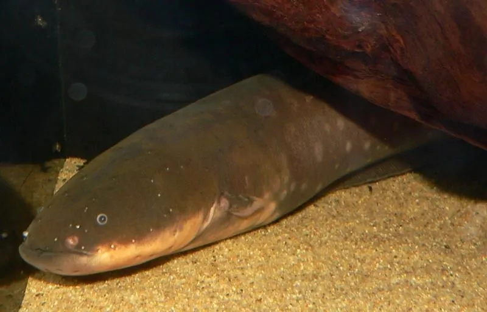

鱼类 · 动物界
电鳗 Electrophorus electricus

生活在南美亚马孙河与奥里诺科河的淡水鱼，能放出 600 V 以上的电压击晕猎物，是现存放电能力最强的动物。
- 分类
- 门脊索动物门纲硬骨鱼纲目裸背电鳗目科裸背电鳗科属电鳗属
- 栖息环境
- 南美亚马孙河、奥里诺科河流域的浑浊缓流、沼泽和泛滥林水域
- 地理分布
- 南美洲亚马孙河和奥里诺科河水系，包括巴西、圭亚那和委内瑞拉等地
- 保护级别
- 暂无评估
物种志
电鳗体呈长圆柱形，虽然名字里带“鳗”，却并非真正的鳗类。它没有背鳍、腹鳍和鳞片，体表光滑，体色灰褐到黑褐色，腹部偏黄；臀鳍很长，从身体中部一直延伸到尾部，靠波浪状摆动来游泳。体长可达 2–2.5 m，体重可达 20 kg，是裸背电鳗目中体型最大的种类。
电鳗生活在亚马孙河和奥里诺科河流域浑浊、低氧的水体中，需要经常浮到水面吞咽空气，靠口腔黏膜吸收氧气。它有三个发电器官：主器官和亨特器官用于发出强电击，萨克斯器官用于感知和导航；放电可以用来捕食、防御和探测环境。它是肉食性动物，捕食鱼类、甲壳类和小型两栖动物，甚至会先放电使猎物的肌肉痉挛，再从容吞食。繁殖期在旱季，雄鱼用唾液修筑泡巢守护鱼卵。电鳗的放电机制被用于仿生学和医学研究，人工发电装置的设计也曾从中获得灵感。目前它没有IUCN 的正式评估，中国也未将其列入国家重点保护野生动物名录。
形态与习性
- 食性捕食鱼类、甲壳类和小型两栖动物
- 体长一般 1.5–2 m，最大可超过 2.5 m
- 体重常见 10–20 kg
- 电压放电电压可达 600 V 以上，最强个体接近 860 V
- 呼吸需定期浮到水面吞咽空气，用口腔黏膜呼吸
- 发电器官主器官与亨特器官负责放电，萨克斯器官用于感知
趣味知识
- 电鳗不是鳗，而是与鲇鱼、脂鲤关系更近的裸背电鳗目鱼类。
- 它一次放电的电压可达 600 V 以上，足以击晕一个成年人。
- 电鳗需要不时浮出水面吞一口空气，靠口腔黏膜吸收氧气。